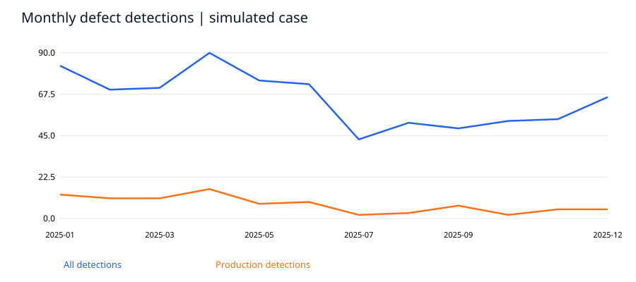
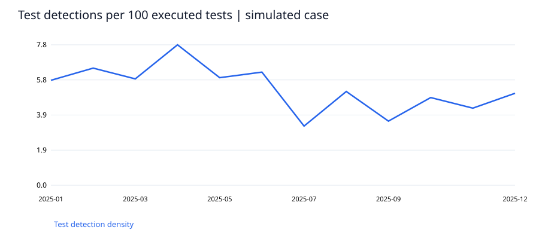

検出欠陥数779
本番検出比率11.8%
解決日数の中央値17
基準日時点の未解決件数90
再オープン比率12.5%
主要な発見
模擬欠陥779件の本番検出比率は11.8%、クローズ済み解決日数の中央値は17日。最多の記録原因はRequirement（393件）。件数だけでなくテスト実行数との比率を併記した。
実行テスト数で正規化したテスト検出密度は前半期6.33件/100テスト、後半期4.33件/100テスト。検出密度の低下は、品質向上だけでなく検出力低下でも生じる。未解決90件を重要度・経過日数で別表にし、クローズ済み中央値の偏りを補足した。
率はパーセント表示。解決日数は暦日。定義はデータ辞書とREADMEを参照。


SQLによる検証結果
| module |
defects |
production_detection_share |
mean_closed_resolution_days |
open_at_cutoff |
| Payment |
330 |
0.1364 |
16.6014 |
39 |
| Account |
263 |
0.0989 |
17.6856 |
34 |
| Search |
186 |
0.1129 |
16.7751 |
17 |
意思決定への提案
要件レビューとPayment領域の回帰テストを優先する仮説を置く。未解決の高重要度案件を年齢別に点検し、テスト範囲・変更規模・リリース別の情報を追加して検証する。
解釈の範囲
完全な模擬ケースであり、勤務先の記録ではない。本番検出比率の分母は全検出欠陥で、未知の欠陥を含む真の流出率ではない。テスト密度はテスト検出件数/実行テスト数であり製品の真の欠陥密度ではない。クローズ済み期間は未解決案件の打ち切りバイアスを含む。原因は仮の分類ラベルであり、因果関係の証明ではない。